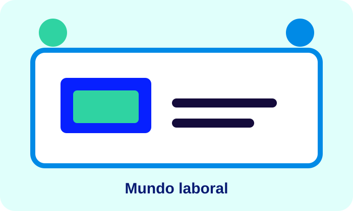

Experiencia práctica
La participación en proyectos permite enfrentarse a tareas, tiempos de entrega y problemas que requieren soluciones concretas.
Por Deiby Estiven Sandoval — FESNA Virtual
El mundo laboral permite poner en práctica conocimientos, desarrollar habilidades y conocer situaciones reales de una organización. La experiencia puede ayudar a conectar la teoría con problemas concretos y con las necesidades de los usuarios o clientes.
La participación en proyectos permite enfrentarse a tareas, tiempos de entrega y problemas que requieren soluciones concretas.
El trabajo puede fortalecer comunicación, colaboración, organización y capacidad para aprender nuevas herramientas.
Los entornos tecnológicos cambian con frecuencia, por lo que la actualización de conocimientos forma parte de la vida profesional.
Construir soluciones y documentar resultados permite reunir experiencias que pueden formar parte del desarrollo profesional.
